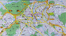
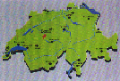

Bern Tourism
Official Tourist Office of Berne
Railwaystation, CH-3001 Berne, Switzerland
E-Mail: info-res@bernetourism.ch
Berne is Switzerland's political and diplomatic capital. The city lies right in the heart of Switzerland, and can easily be reached by rail, road or air from the main capitals of Europe.
| How to get to Berne | Accommodation: List of all hotels |
| What to do in Berne | Accommodation: On-Line Reservation |
| Congresses | Gastronomy |
| Tourist Information Berne | History |
 (63k)Map of the city of Berne |
Berne Surrounding |
| (105k) Map of Berne's city centre |
 (50k)Map of Switzerland Switzerland Tourism |
![[Bild nicht verfügbar]](assets/biblogo.png)
| |